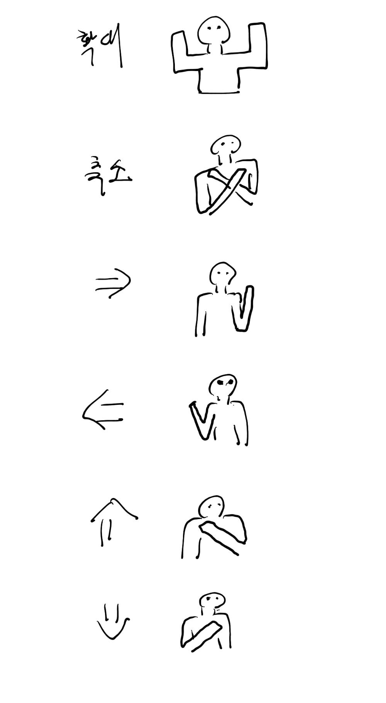
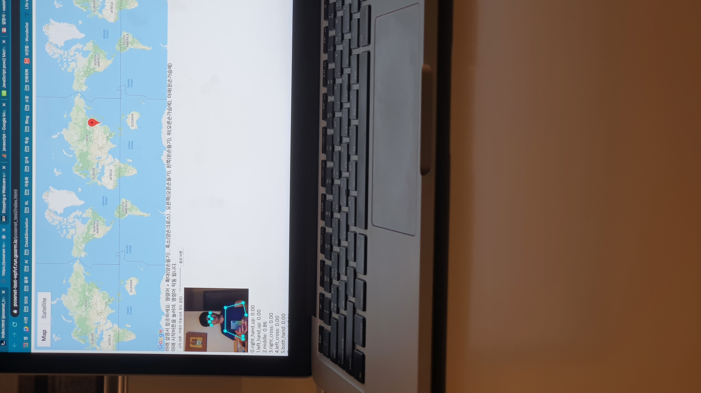

물류AI연구회 - PoC 1차 (구글맵제어)
* 주의사항: 상반신이 카메라에 나와야 됩니다.(카메라와 거리 최소 1m 거리)
아래 시작버튼을 눌러야, 명령어 작동 됩니다.
시작 버튼: 카메라 작동(5초 정도 걸림)
명령어 동작(아래그림참조) => 확대(양손들기) , 축소(양손크로스) , 오른쪽(오른손들기), 왼쪽(왼손들기), 위(오른손가슴에), 아래(왼손가슴에)

